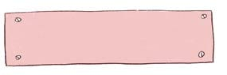
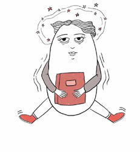
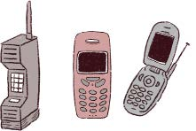
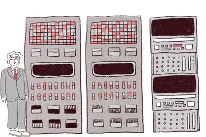
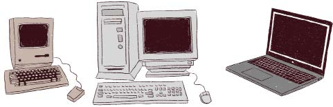
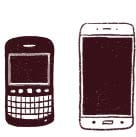
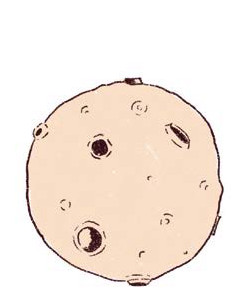
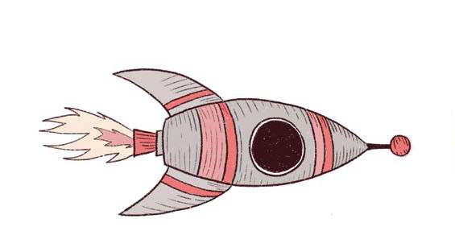

¡A TODA VELOCIDAD!
SIGLO XX
Computación, informática, viajes espaciales.
Revolución digital
1989
Tim Berners-Lee crea la web
#web
red global, espacio libre y creativo para que todas las personas compartan sus ideas y el conocimiento sea accesible
#internet
red de computadoras que se encuentran interconectadas a nivel mundial para compartir información.
#entorno digital
todas las plataformas y aplicaciones que nos permiten interactuar a través de medios virtuales. Se refiere a los lugares que transitamos en Internet.